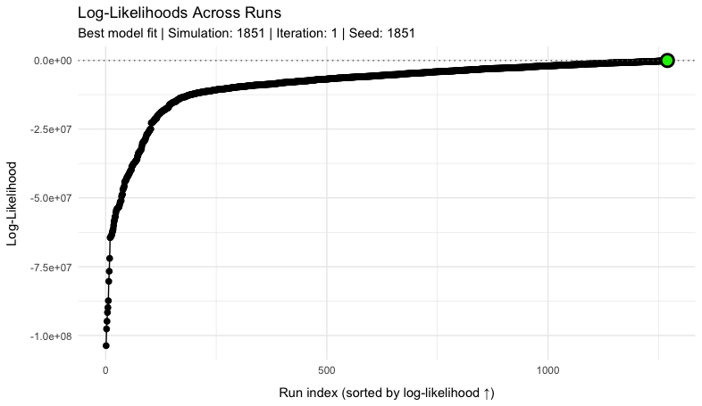

4 Model calibration
4.1 Bayesian Likelihood Approach
The MOSAIC framework employs Bayesian inference to calibrate its spatial transmission model. As in many other algorithms that use Bayesian inference, the model systematically estimates parameters based on their ability to recreate the observed data, which is measured through a likelihood function. One major assumption of the Bayesian method is that all model parameters—and most importantly, the link between model and data—have a known probability distribution (e.g. Normal, Poisson, Uniform). Therefore, all parameters in the MOSAIC framework have a prior distribution (before model calibration) that is highly informed by other data sources and meta-analyses (see the Model Description page).
To calibrate the MOSAIC model to observed cholera surveillance data, the algorithm updates prior beliefs about model parameters through the likelihood function \(\mathcal{L}(\boldsymbol{\Theta})\). The likelihood is essentially a function of model parameters that measures how probable our particular model is given the observed data, or more formally, the posterior probability distribution of the parameter vector \(\boldsymbol{\Theta}\). This parameter vector includes all quantities required for a single iteration of the model, which includes transmission rates, mobility parameters, and seasonal forcing coefficients for example (see the Table of Model Parameters). \[\begin{equation} \boldsymbol{\Theta} = \{\, \beta,\, \gamma,\, \omega,\, a_1,\, a_2,\, b_1,\, b_2,\, \dots \, \} \tag{4.1} \end{equation}\] During model calibration, we aim to identify the best set of model parameters that maximize the log-likelihood while sampling from the large parameter space of \(\boldsymbol{\Theta}\) using a brute‑force random sampling algorithm (more details below): \[\begin{equation} \hat{\boldsymbol{\Theta}} = \underset{\boldsymbol{\Theta}}{\arg\max}\big[\log \mathcal{L}(\boldsymbol{\Theta})\big]. \tag{4.2} \end{equation}\]
To specify the likelihood function, we treat \(\mathcal{L}(\boldsymbol{\Theta})\) as the posterior density of \(\boldsymbol{\Theta}\) given the observed cholera surveillance data, and then use the Bayes’ theorem to set up the model-data link. \[\begin{equation} \mathcal{L}(\boldsymbol{\Theta}) \Longrightarrow P(\boldsymbol{\Theta}\mid\text{data}) \tag{4.3} \end{equation}\] Because the observed data \(P(\text{data})\) does not depend on the model parameters and the prior \(P(\boldsymbol{\Theta})\) is assumed to be uniform, these two terms can be treated as constants in Bayes’ theorem. Consequently, the posterior density is proportional to the likelihood: \[\begin{equation} P(\boldsymbol{\Theta}\mid\text{data}) =\; \frac{\displaystyle P(\text{data}\mid\boldsymbol{\Theta})\; \overbrace{P(\boldsymbol{\Theta})}^{\text{constant}} } {\displaystyle \underbrace{P(\text{data})}_{\text{constant}} } \;\propto\; P(\text{data}\mid\boldsymbol{\Theta}), \tag{4.4} \end{equation}\] therefore maximizing the posterior (or minimizing its negative log) is equivalent to maximizing the likelihood \(P(\text{data}\mid\boldsymbol{\Theta})\), and we can now construct the likelihood function using the relevant probability density functions \(f(y\mid\hat{y})\) as described below.
4.2 Total Log-likelihood for Cases and Deaths
Because the model posterior is proportional to \(P(\text{data}\mid\boldsymbol{\Theta})\), we constructed the likelihood function with the appropriate distribution for each of the observed data types using common notation for a probability density function \(f(y\mid\hat{y})\). The MOSAIC framework is a spatial model, so we also included the \(J\) spatial locations and \(T\) time points in the full likelihood, which gives the product over both indices:
\[\begin{equation} P\left(\text{data}\mid\boldsymbol{\Theta}\right) \;=\; \prod_{j=1}^{J} \;\prod_{t=1}^{T} f\!\left( y_{jt}\; \bigl|\; \hat{y}_{jt}\!\left(\boldsymbol{\Theta}\right) \right), \tag{4.5} \end{equation}\]
where \(y_{jt}\) is the observed count (cases, deaths, etc.) for location \(j\) at time \(t\), and \(\hat{y}_{jt}(\boldsymbol{\Theta})\) is the corresponding model-generated mean (written \(C_{j,t}^{\text{est}}\) for cases below). Substituting \(f(\cdot)\) with the appropriate probability distribution (Poisson, Negative Binomial, etc.) yields the explicit likelihood function used in calibration.
The total log-likelihood combines contributions from observed cases and deaths across locations and time points. This combined likelihood function quantifies the probability of the observed epidemiological data given the model parameters \(\boldsymbol{\Theta}\). \[\begin{equation} \log \mathcal{L}(\boldsymbol{\Theta}) = \sum_{j=1}^{J} w_{j} \left[ w_{\text{cases}} \sum_{t=1}^{T} w_{t}\,\log P\left(C_{j,t}^{\text{obs}} \mid C_{j,t}^{\text{est}}(\boldsymbol{\Theta}), k_{\text{cases},j}\right) + w_{\text{deaths}}\,\log \mathcal{L}^{\text{deaths}}_{j}(\boldsymbol{\Theta}) \right] \tag{4.6} \end{equation}\]
Note that each log-likelihood term is weighted three times — by a location weight \(w_j\), a time-step weight \(w_t\) (which, for deaths, weights the days of each reporting week inside \(\log \mathcal{L}^{\text{deaths}}_{j}\)), and an outcome-specific weight \(w_{\text{cases}}\) or \(w_{\text{deaths}}\) — so that contributions reflect data reliability and public-health priorities across space, time, and outcome. The cases term is a sum of per-day Negative Binomial log-densities. The deaths term \(\log \mathcal{L}^{\text{deaths}}_{j}\) is not a per-day density: it is the marginal likelihood of the weekly observed deaths with the reported case fatality ratio integrated out for each simulated path, as defined in the Case fatality rate section of the model description (a weekly quasi-Poisson score with a per-location dispersion and a small background, and a Laplace approximation over a location offset and one deviation per calendar year). The next subsection details the cases density and how its dispersion is estimated.
| Parameter | Description |
|---|---|
| \(J\) | Number of locations |
| \(T\) | Number of time points |
| \(C_{j,t}^{\text{obs}}\) | Observed cases at location \(j\) and time \(t\) |
| \(C_{j,t}^{\text{est}}(\boldsymbol{\Theta})\) | Model-estimated mean cases at location \(j\), time \(t\) |
| \(\log \mathcal{L}^{\text{deaths}}_{j}(\boldsymbol{\Theta})\) | Integrated deaths log-likelihood at location \(j\) (reported CFR integrated out; see the model description) |
| \(w_j\) | Location-specific weights (reflecting population or data confidence) |
| \(w_t\) | Time-specific weights (typically uniform, \(w_t=1\)) |
| \(w_{\text{cases}}\) | Relative weight for cases |
| \(w_{\text{deaths}}\) | Relative weight for deaths |
| \(k_{\text{cases}, j}\) | Negative Binomial dispersion for cases at location \(j\) |
4.3 Distributional Assumptions for Likelihood Components
For each location \(j\) and time step \(t\) the cases density \(f\!\left(y_{jt}\mid\hat{y}_{jt}\left(\boldsymbol{\Theta}\right)\right)\) in Equation (4.5) is a Negative Binomial with a location-specific dispersion parameter \(k_j\), which reduces to the Poisson density when \(k_j = \infty\).
4.3.1 Negative Binomial density
\[\begin{equation}
\log P_{\text{NB}}\!\left(y_{jt}\mid\hat{y}_{jt},k_j\right)
\,=\,
\log\Gamma(y_{jt}+k_j)-\log\Gamma(k_j)-\log\Gamma(y_{jt}+1)
+k_j\log\!\left[\tfrac{k_j}{k_j+\hat{y}_{jt}}\right]
+y_{jt}\log\!\left[\tfrac{\hat{y}_{jt}}{k_j+\hat{y}_{jt}}\right]
\tag{4.7}
\end{equation}\]
so that \(\mathrm{Var}(y_{jt})=\hat{y}_{jt}+\hat{y}_{jt}^2/k_j\). Every cell is scored through this density with the predicted mean floored at \(\max\!\left(10^{-4},\ 0.02\,\bar{y}_{j}\right)\), where \(\bar{y}_{j}\) is the location’s mean observed count (control$likelihood$eps_rel_cases), so a day with observed cases and a zero prediction costs a bounded, data-scaled amount.
The dispersion \(k_j\) is a property of the observation process, so it is estimated once per calibration from the observed cases alone (est_nb_dispersion()), not from the model-observation mismatch. For each location we aggregate the daily series to its native weekly reporting cadence (the reporting-week boundary is detected per location), model the weekly mean with a spline trend plus seasonal harmonics following the Farrington/Noufaily convention used by the surveillance package, and estimate \(k_j\) by conditional maximum likelihood (MASS::glm.nb), honouring the per-observation confidence weights. The per-location estimates are then shrunk toward a cross-location mean-dispersion trend in the style of Love, Huber & Anders 2014, with each location’s own estimate weighted by its precision (the trend is fitted only when at least five locations carry estimates; otherwise the estimates are used as they are). Because the daily series are weekly totals spread evenly over the days of the week, the quadratic term \(\hat{y}_{jt}^2/k_j\) of the variance is the same on the weekly and the daily scale, so the weekly \(k_j\) applies directly to the daily cells. All-zero and otherwise uninformative series, and dispersion estimates that run to the Poisson boundary, resolve to \(k_j = \infty\), i.e. the Poisson density
\[\begin{equation}
\log P_{\text{Pois}}\!\left(y_{jt}\mid\hat{y}_{jt}\right)
\,=\;
y_{jt}\log\hat{y}_{jt}-\hat{y}_{jt}-\log(y_{jt}!).
\tag{4.8}
\end{equation}\]
The estimates are written to 2_calibration/diagnostics/nb_dispersion.csv. They replace an earlier method-of-moments estimate across the whole series, which measured the variance of the epidemic signal rather than the observation dispersion and was held up by a floor (\(k \ge 3\)) at almost every location; that floor is retired. A dispersion can still be set explicitly with control$likelihood$nb_k_cases, which replaces the estimate.
The weighting scheme \(w_j,\,w_t,\,w_{\text{cases}},\,w_{\text{deaths}}\) (introduced in Equation (4.6)) controls the relative influence of each location, time step, and outcome on the overall fit.
4.4 Algorithm for Parameter Estimation
The MOSAIC calibration relies on a brute-force random sampling (BFRS) workflow with importance-sampling for estimating posterior parameter distributions. The BFRS approach is deliberately simple, fully parallelisable, and maps directly onto the informative priors which have been painstakingly estimated a priori (see the Model Description page).
Unlike Markov-Chain Monte Carlo (MCMC) sampling methods, the BFRS workflow generates independent parameter draws, so there is no need to worry about convergence diagnostics, burn-in, or autocorrelation, and simulations can be distributed across hundreds of CPUs. The trade-off is efficiency: for a fixed computational budget MCMC can concentrate samples in the highest-posterior region, whereas BFRS spends many draws in moderately likely parts of the space. Although this wastes some compute, the penalty is acceptable because the metapopulation engine (run_simulation(), implemented in R) evaluates each \(\boldsymbol{\Theta}^{(i)}\) parameter draw in roughly a second for the full 40-location model, and draws are embarrassingly parallel.
Relative to Latin-hypercube or Sobol sequence sampling designs, which are also intended to do broad surveys of the parameter space, BFRS keeps the exact prior shape, can be extended at any time by simply adding more draws, and feeds directly into likelihood weighting without extra transformations. In combination with the engine’s speed, these features make Bayesian calibration in MOSAIC both fast and easily reproducible.
In practice, the BFRS workflow is executed in two phases, and every draw in both phases comes from the prior \(P(\boldsymbol{\Theta})\); the phases differ only in how many draws are run, not in where they are drawn. An adaptive phase runs fixed-size batches (default 500 draws; at least 5 and at most 8 batches) and after each batch recomputes the per-parameter marginal ESS described in the Model convergence section, tracking the value reached by 95% of the parameters. It ends when a regression of that ESS on \(\sqrt{n_{\text{sim}}}\) fits with \(R^2 \ge 0.90\) (over at least five batches) or the batch limit is reached. A predictive phase then uses that regression to predict how many further draws are needed to reach the target ESS, runs them in batches (never smaller than the adaptive batch size and at most 10,000 draws each, for at most 10 batches), and re-evaluates the ESS after each until the target is met or the total budget (default 100,000 draws) is spent. Known limitation of this stopping rule: the per-parameter marginal ESS that drives both phases is not bounded by the effective sample size of the importance weights themselves, so it does not detect weight collapse. When the weights have collapsed onto a single draw (exact importance-sampling ESS of 1, the regime routinely observed at MOSAIC’s data scale) the default kernel-density estimate still returns a marginal ESS that grows with the number of draws (roughly \(n_{\text{sim}}/5\) under a uniform prior and \(n_{\text{sim}}/25\) under a lognormal one), which can clear the default target and stop sampling; see Effective sample size below. The stopping rule should therefore be read alongside the exact importance-sampling diagnostics reported in summary.json. A calibration can instead be run with a fixed number of draws (control$calibration$n_simulations); such a run never evaluates the ESS criterion and reports the status completed_fixed (or completed_fixed_partial if the posterior-ensemble metrics could not be computed) with converged = FALSE and convergence_evaluated = FALSE, rather than completed_unconverged. Batches are dispatched to a local PSOCK cluster of R worker processes (the parallel package); the BLAS and OpenMP thread-count environment variables are pinned to 1 in each worker so that parallel workers do not oversubscribe the cores.
The steps below summarise how this BFRS workflow is turned into a practical calibration routine—moving from prior draws, through model simulation and likelihood evaluation, to the identification of the best-fitting parameter set.
- Generate reproducible parameter sample
Draw \(n_{\text{sim}}\) independent parameter vectors \(\boldsymbol{\Theta}^{(i)} \sim P(\boldsymbol{\Theta})\) using predetermined random seeds, ensuring that the calibration can be rerun and audited exactly.
- Forward-simulate
The transitions between most model compartments are stochastic, so for each independent sampling of the parameter space \(\boldsymbol{\Theta}^{(i)}\), we run the stochastic transmission model for \(n_{\text{iter}}\) internal iterations.
- Evaluate the fit for every draw
For each of the \(n_{\text{sim}} \times n_{\text{iter}}\) internal iterations, compute the total log-likelihood via Equation (4.6), and combine the \(n_{\text{iter}}\) values of each draw into \(\log\mathcal{L}(\boldsymbol{\Theta}^{(i)})\) by their log-mean-exp, i.e. the log of the likelihood averaged over the stochastic iterations.
- Posterior summaries and representative-model selection
After all \(n_{\text{sim}}\) parameter vectors have been scored, the calibration pipeline produces three complementary summaries: the posterior parameter distributions and two predictive representations.
Posterior parameter distributions — the saturated subset weights \(\tilde w_i\) (Equation (4.10)) are applied to the full draw set, yielding marginal posterior summaries for each model parameter (Equation (4.11)). These are reported in the prior/posterior diagnostic plots and form the substrate for all downstream forecasts.
Ensemble forecast — for each of \(n_{\text{iter}}^{\text{ens}}\) stochastic realisations per parameter vector (default 10), the model is simulated forward and the per-trajectory predictions are aggregated by their importance weights to produce a posterior predictive ensemble. This is the default representation for probabilistic forecasts.
Medoid representative model — a single parameter vector is also selected for scenario analysis. The medoid model is the ensemble member whose predicted cases trajectory (the median over its stochastic runs) is closest, in mean absolute error of \(\log(1 + \text{cases})\), to the ensemble’s central cases trajectory, so that the representative tracks the reported curve. The distance is pooled over every location and every scored time step (the burn-in and the engine’s artifact-masked steps are excluded), so in a multi-location calibration every location counts and a single location is not allowed to stand for the whole network; for a single-location run it reduces to that location’s log-scale error. The distance uses cases only. Its configuration, with the reported case fatality ratio shifted to the medoid’s own posterior, is saved as
config_medoid.jsonand simulated for \(n_{\text{iter}}^{\text{best}}\) stochastic realisations (default 100), so its reported coverage is directly comparable to the ensemble. A best-likelihood configuration is not produced; the highest-likelihood draw is only flagged in the sample table.
Both predictive representations, the ensemble and the medoid, report \(R^2\) and the bias ratio from the central line of their respective stochastic trajectories rather than from a separate deterministic simulation, so they are directly comparable across the prediction set. The central line is the weighted mean by default (control$predictions$central_method; it was the weighted median before MOSAIC-pkg v0.98.0, and "median" restores that). In the ensemble, each member’s deaths are redrawn from the posterior of the reported case fatality ratio given that member’s path, and forecast years carry the ensemble’s shared latest-year CFR shift (see the Case fatality rate section). The retained subset of draws used for the ensemble is selected after sampling has finished, by a grid search over subset sizes that seeks a subset meeting the targets \(\text{ESS}_{\text{best}} = 100\), \(A_{\text{best}} = 0.70\) and \(\mathrm{CV}_{\tilde w,\text{best}} = 1.0\), relaxing the targets through a sequence of tiers (get_default_subset_tiers()) until one is met (see Stage 1 below). Each candidate subset is scored with the same weights the posterior uses (control$targets$best_subset_weighting; the saturated weights of Equation (4.10) by default), so the size the search certifies is the size at which the posterior’s own weights meet the tier. No further simulations are run for this step.
4.5 Estimating the Posterior Distribution of Model Parameters
To transform the BFRS ensemble of samples from the parameter space and corresponding likelihood values \(\bigl\{\boldsymbol{\Theta}^{(i)},\,\log\mathcal{L}(\boldsymbol{\Theta}^{(i)})\bigr\}_{i=1}^{n_{\text{sim}}}\) into an approximate posterior, we used Importance Sampling (IS) — with the important caveat, quantified below, that at MOSAIC’s data scale the IS weights collapse onto a single draw, so the implemented scheme departs from exact IS by design. The IS method is a well‑known technique to estimate posterior distributions originally described by Kahn & Marshall 1953 and reviewed in a more modern context by Tokdar & Kass 2010. Thus, we calculate the IS-weights from the \(\Delta \text{AIC}\) of each draw and retain a subset of supported models, as described in the steps below. Note that MOSAIC does not apply the textbook \(\Delta \le 6\) cut-off; the reason, and the scheme actually used, are given in the “Assign best-subset weights” section below.
4.5.1 Compute \(\Delta \text{AIC}\) for every draw
For any model, the Akaike Information Criterion is \(\text{AIC} \;=\; 2k \;-\; 2\log\mathcal{L}\), where \(k\) is the number of estimated parameters. Because every MOSAIC simulation has the same \(k\), the \(\Delta \text{AIC}\) of draw \(i\) relative to the best draw is determined solely by the difference in log-likelihood. \[\begin{equation} \Delta_i \;=\; \text{AIC}_i - \text{AIC}_{\text{min}} \;=\; -\,2\!\left[\log\mathcal{L}(\boldsymbol{\Theta}^{(i)}) - \log\mathcal{L}_{\max}\right] \tag{4.9} \end{equation}\]
4.5.2 Assign best-subset weights
Since the BFRS method generates a large ensemble of candidate parameter sets \(\boldsymbol{\Theta}^{(i)}\), we reduce the influence of poorly fitting models before forming the posterior. MOSAIC does this in two stages: a rank-based selection of the best subset, followed by a saturating Gibbs weighting within it.
Stage 1 — rank-based subset selection. The retained best subset \(\mathcal{B}\) is the top \(q\) draws by log-likelihood, where \(q\) is chosen by a tiered search (get_default_subset_tiers()) subject to \(|\mathcal{B}| \ge \text{ESS}_{\text{best}}\) and the agreement/CV targets below, each candidate \(q\) being scored on the Stage 2 weights of its own subset (saturated by default; the scheme set by control$targets$best_subset_weighting is used for the tier search, the subset optimizer and the posterior alike). It is a rank criterion, not a threshold on \(\Delta_i\). Because the saturated weights are nearly flat, in practice the ESS target alone sets \(q\) and the agreement and CV targets rarely bind.
Stage 2 — saturating weights within the subset. For \(i \in \mathcal{B}\) we compute
\[\begin{equation} w_i^{\text{raw}} \;=\; \exp\!\left[-\tfrac12 \min(\Delta_i,\, \Delta^{\ast})\right], \qquad \Delta^{\ast} = 4, \qquad \text{and then normalise:} \qquad \tilde{w}_i \;=\; \dfrac{w_i^{\text{raw}}}{\displaystyle\sum_{j\in\mathcal{B}} w_j^{\text{raw}}}. \tag{4.10} \end{equation}\]
Note the \(\min(\cdot)\): \(\Delta_i\) is saturated at \(\Delta^{\ast}=4\), not cut off. Every draw beyond \(\Delta^{\ast}\) receives the same non-zero weight \(e^{-2}\), so all weights lie in \([e^{-2}, 1]\) and the ratio between the best and worst retained draw can never exceed \(e^{2} \approx 7.39\).
Why not the textbook \(\Delta \le 6\) cut-off?
Earlier versions of this document specified a hard cut-off, \(w_i^{\text{raw}} = 0\) for \(\Delta_i > 6\), on the standard model-selection argument (Burnham & Anderson 2002, 2004) that \(\Delta_i \le 6\) corresponds to a likelihood ratio of roughly \(0.05\). That rule is not applicable at MOSAIC’s data scale, and is not what the pipeline implements.
The \(\Delta \le 6\) heuristic is calibrated for comparing a handful of fitted models, each evaluated at its own maximum-likelihood estimate, where \(\Delta\) is naturally of order unity. MOSAIC instead scores unfitted prior draws against a time-series likelihood summed over \(O(10^5)\) observations (40 locations \(\times\) $$1,400 days \(\times\) 2 outcome channels). Log-likelihood differences between prior draws are then of order \(10^5\)–\(10^6\), and essentially no draw other than the single best falls within 6 AIC units.
This is not hypothetical. In a reference 100,000-draw calibration over all 40 locations, the median \(\Delta_i\) was \(9.6 \times 10^5\) and the maximum \(1.4 \times 10^7\); exactly one draw satisfied \(\Delta_i \le 6\). Applying the documented cut-off would therefore place the entire posterior on a single parameter vector, yielding degenerate credible intervals. Saturating at \(\Delta^{\ast}\) is what keeps the posterior non-degenerate.
What the saturation does and does not buy
The saturation should be understood as deliberate regularisation, not as importance sampling. Two consequences follow directly and are reported rather than hidden:
Within the subset, the likelihood is used mainly to rank, not to weight. Because weights are confined to \([e^{-2},1]\), the subset posterior is close to uniform over \(\mathcal{B}\). In the reference run above, the single best draw carried \(6.1\%\) of the mass while the remaining 114 draws each carried \(0.82\%\) against \(0.87\%\) for exact uniformity. The resulting estimator is closer in spirit to approximate Bayesian computation with a rank-based acceptance threshold than to importance sampling.
The convergence metrics below are inflated by construction. \(\widehat{\text{ESS}}\), \(A\) and \(\mathrm{CV}_{\tilde w}\) are all computed on these saturated weights. Since \(\widehat{\text{ESS}}\) is maximised by uniform weights, saturation raises it: for weights bounded in \([e^{-2},1]\), \(\widehat{\text{ESS}} \gtrsim 0.42\,|\mathcal{B}|\) (Kish) or \(0.62\,|\mathcal{B}|\) (perplexity) regardless of how poorly the draws fit. These metrics therefore measure the weighting scheme at least as much as they measure the fit, and they cannot be read as evidence that the importance sampler has explored the posterior.
Because of point 2, MOSAIC additionally reports exact, untruncated importance-sampling diagnostics (calc_is_diagnostics()), written to summary.json as ess_is_all, ess_is_best, khat_all and khat_all_status. These apply Equation (4.12) to the raw likelihood ratios \(r_i \propto \mathcal{L}(\boldsymbol{\Theta}^{(i)})\) with no truncation, and add the Pareto-\(\hat k\) shape statistic of PSIS (Vehtari et al. 2024); \(\hat k \ge 0.7\) indicates IS estimates with unbounded variance. In the reference run these gave \(\widehat{\text{ESS}}_{\text{IS}} = 1.00\) against a reported \(\text{ESS}_B\) of \(107.5\) — a gap of more than two orders of magnitude. The two numbers are not in conflict; they measure different things, and both are reported so that the difference is visible. Any claim about posterior coverage should be read against the exact diagnostics, not against \(\text{ESS}_B\) alone.
A tempered alternative to Stage 2 is available (control$targets$best_subset_weighting = "tempered"), which selects the inverse temperature adaptively so that the worst retained draw sits at a specified weight floor rather than saturating at a fixed \(\Delta^{\ast}\). It does preserve the likelihood ordering within \(\mathcal{B}\) faithfully (rank correlation between weight and log-likelihood 1.00, against 0.16 for the saturated scheme). But it is SHARPER than the default, not softer, and should not be enabled expecting a gentler weighting: \(w_{\text{gibbs}}\) is derived from \(\max(\Delta)\) within the set it is applied to, and inside \(\mathcal{B}\) that maximum is ~\(4\times10^{3}\) rather than the ~\(2.9\times10^{6}\) seen across all draws, making the inverse temperature roughly 680 times larger. Measured on a 25,000-draw Ethiopia run it moves \(\widehat{\text{ESS}}\) from 107.5 to 1.25, with 96% of the posterior mass on a single draw. Because its inverse temperature is rescaled to each candidate subset’s own \(\Delta\) range, its ESS grows only roughly in proportion to the subset size (about \(0.06\,|\mathcal{B}|\) when \(\Delta\) rises linearly with rank), so the tier search meets its targets, if at all, at a much larger subset than under the saturated scheme. When selected, the tempered weights are used for the posterior summaries and the ensemble, not only for the convergence gate. The default remains "saturated".
4.5.3 Posterior summaries
The saturated weights \(\mathbf{\tilde{w}}\) of Equation (4.10) are not proportional to the posterior density \(P(\boldsymbol{\Theta}\mid\text{data})\), and the summaries below should not be read as exact Bayesian posteriors. Within \(\mathcal{B}\) the true density ratio between the best and worst retained draw spans many orders of magnitude — measured at \(\exp(-52{,}263)\) on a reference 100,000-draw run — while the saturation caps the weight ratio at \(e^{2}\approx 7.39\). What follows is therefore a weighted empirical summary over the retained subset, closer to an approximate-Bayesian-computation posterior with a rank-based acceptance rule than to importance-sampling from the exact posterior (see “Assign best-subset weights” above, and the exact IS diagnostics reported in summary.json). With that reading in place, we summarise each fitted parameter as a weighted empirical statistic. Take for example the scalar \(\sigma\), which gives the proportion of infections that are symptomatic. It is an element of each \(\boldsymbol{\Theta}^{(i)}\) sample of the parameter space, so \(\bigl\{\sigma^{(i)}\bigr\}_{i=1}^{n_{\text{sim}}}\) gives all \(\sigma\) values for which a likelihood has been calculated. Therefore, we derive the posterior mean and 95% credible intervals for \(\sigma\) as:
\[\begin{equation}
\mathbb{E}[\sigma] \;=\; \sum_{i=1}^{n_{\text{sim}}} \tilde{w}_i\,\sigma^{(i)}
\qquad \text{and} \qquad
95\% \, \text{CI} \;=\; \left[\,Q^{(\tilde{w})}_{0.025},\; Q^{(\tilde{w})}_{0.975}\right].
\tag{4.11}
\end{equation}\]
Where \(Q^{(\tilde{w})}_{p}\) denotes the \(\tilde{w}\)-weighted \(p\)-th quantile of the retained ensemble, ensuring that the resulting intervals are
fully consistent with the Bayesian posterior implied by the importance-sampling weights.
4.6 Model convergence
Because the MOSAIC framework uses an i.i.d. brute-force random sampling (BFRS) scheme for model fitting, traditional chain-based diagnostics such as \(\hat R\) are not relevant. Instead we track three complementary weight–based statistics that together tell us how many models inform the posterior, how strongly they agree, and how evenly their support is distributed. These metrics also provide mathematical criteria that supported by previous theory and empirical studies, which is crucial for assessing model convergence. Specifically these metrics are:
-
Effective sample size — \(\widehat{\text{ESS}}\)
gauges the amount of independent posterior information retained in the subset of best fitting model runs. -
Agreement index — \(A\)
measures the level of consensus among the retained best subset models. -
Coefficient of variation of weights — \(\mathrm{CV}_{\tilde w}\)
measures the variability of the retained models and detects extremely skewed model weights.
4.6.1 Effective sample size (ESS)
Since the BFRS draws are independent of \(P(\boldsymbol{\Theta})\), ESS plays
the role that \(\hat R\) does in MCMC. We employ the specification of the ESS in Elvira et al. 2022. Applied to the saturated subset weights \(\tilde w_i\) of Equation (4.10) this yields the reported \(\text{ESS}_B\); applied to the raw untruncated ratios it yields the exact \(\widehat{\text{ESS}}_{\text{IS}}\) described above. Both use:
\[\begin{equation}
\widehat{\text{ESS}} =
\left[
\sum_{i=1}^{n_{\text{sim}}} \tilde{w}_i^{\,2}
\right]^{-1}.
\tag{4.12}
\end{equation}\]
Equation (4.12) is the Kish form (control$targets$ESS_method = "kish"). The default, "perplexity", is the exponential of the weight entropy, \(\exp\!\big(-\sum_i \tilde{w}_i \log \tilde{w}_i\big)\), which is never smaller than the Kish value; \(\text{ESS}_B\), \(\widehat{\text{ESS}}_{\text{IS}}\) and the marginal ESS below all use the configured form.
Because draws outside \(\mathcal{B}\) have \(\tilde{w}_i=0\), \(\text{ESS}_B\) reflects only the retained
subset, and — as noted above — is bounded below by roughly \(0.42|\mathcal{B}|\) by the saturation alone. For importance-sampling–style weighting in moderate-dimensional parameter spaces, an ESS in the low thousands is a reasonable working target for stable marginal posterior medians and 95% credible intervals (Elvira et al. 2022; see also the MCMC-context discussion of ESS thresholds in Gelman et al. 2014 and Bürkner 2017). The earlier MOSAIC guidance of \(\widehat{\text{ESS}} \gtrsim 500\)–\(1000\) tracks these MCMC heuristics; for the higher-dimensional BFRS pipeline used in v1.0 we additionally inspect the marginal-parameter ESS (below) and the Pareto-\(k\) diagnostic from PSIS to flag cases where the truncated-weight distribution has heavy tails.
The aggregate \(\widehat{\text{ESS}}\) above measures the joint information retained across the full parameter vector \(\boldsymbol{\Theta}\). To diagnose whether the posterior on any individual parameter is well-supported, we also compute a per-parameter marginal ESS. The default (control$targets$ESS_marginal_method = "kde") estimates each parameter’s weighted marginal posterior by a kernel density on a grid over the range of its draws (100 grid points at the default target \(\text{ESS}_{\text{param}} = 100\), more for higher targets), divides it by a uniform density on that range, applies Equation (4.12) to the normalised ratios and rescales the result from grid points to draws. A "binned" alternative sums the weights in 100 bins, applies Equation (4.12) to the bin totals and rescales by the number of occupied bins. Both start from the raw importance weights \(\exp(\log\mathcal{L}_i - \log\mathcal{L}_{\max})\) over all draws, and both replace the bare Owen ESS used in earlier versions, which was sensitive to single highly weighted draws. This marginal ESS is the quantity that drives the adaptive and predictive phases described above.
Known limitation. Neither form of the marginal ESS is bounded by the ESS of the importance weights. The kernel bandwidth is chosen from the unweighted draws, so it does not shrink as the weights concentrate, and both forms are rescaled by the number of draws. A weight vector that has collapsed onto a single draw (exact \(\widehat{\text{ESS}}_{\text{IS}} = 1\)) therefore still yields a marginal ESS that grows with \(n_{\text{sim}}\) (for the default "kde", roughly \(n_{\text{sim}}/5\) under a uniform prior and \(n_{\text{sim}}/25\) under a lognormal prior; for "binned", about \(n_{\text{sim}}\) divided by the number of occupied bins), and for a non-uniform prior the uniform reference density mixes the prior’s shape into the result. Because this quantity is the stopping rule, a collapsed sampler can clear the default target (\(\text{ESS}_{\text{param}} = 100\) for 95% of parameters) and end the adaptive phase. The defect is documented and its correction deferred; until it is fixed, the marginal ESS and the stop it triggers should be read against the exact importance-sampling diagnostics (\(\widehat{\text{ESS}}_{\text{IS}}\) and Pareto \(\hat k\)), which do detect the collapse.
The weights in Equation (4.10) are related to the broader Gibbs-posterior family (Bissiri et al. 2016), though — as noted above and for the reason given after Equation (4.13) — the implemented saturated form does not satisfy the coherence requirement from which Bissiri et al. derive that family, so it is not a Gibbs posterior. The general form is
\[\begin{equation} \tilde{w}_i \;=\; \frac{\exp\!\big(-w_{\text{gibbs}}\, x_i\big)}{\sum_{j=1}^{n_{\text{sim}}} \exp\!\big(-w_{\text{gibbs}}\, x_j\big)}, \tag{4.13} \end{equation}\]
where \(x_i\) is a generic loss (lower is better) and \(w_{\text{gibbs}} \ge 0\) is the inverse-temperature parameter that controls how sharply weight concentrates on the best draws. Setting \(x_i = \min(\Delta_i, \Delta^{\ast})\) and \(w_{\text{gibbs}} = 1/2\) recovers Equation (4.10); note that it is the saturated loss, not \(\Delta_i\) itself, that appears — with \(x_i = \Delta_i\) the Gibbs form gives untruncated Akaike weights, which at MOSAIC’s data scale collapse onto a single draw. Setting \(x_i = -\log\mathcal{L}(\boldsymbol{\Theta}^{(i)})\) and \(w_{\text{gibbs}} = 1\) recovers normalised likelihood weights. The Gibbs formulation is what allows the pipeline to offer the tempered scheme described above, in which \(w_{\text{gibbs}}\) is set adaptively from the observed \(\Delta\) range instead of being fixed at \(1/2\).
Two caveats on the saturated default, both material. First, it is not sample-coherent: because \(\min(\Delta_i, \Delta^{\ast})\) places the sample maximum inside a non-linear function, the additive shift no longer cancels, and the relative weight of two fixed draws depends on which other draws are in the sample. Concretely, two draws with \(\log\mathcal{L} = -100\) and \(-102\) have weight ratio \(e^{2}=7.39\); adding a third, better draw at \(-90\) — changing neither of the first two — moves that ratio to exactly \(1.00\). Bissiri et al. derive the Gibbs form from a coherence requirement, which this violates. Second, the saturation level \(\Delta^{\ast}=4\) is fixed, whereas the classical truncated-importance-sampling result of Ionides 2008 requires a truncation level that GROWS with the sample size (at \(\sqrt{S}\,\bar r\)) for consistency. A fixed level does not deliver it, so the estimator does not converge as \(n\) grows.
Note that the optional shape terms of the likelihood (peak timing, peak magnitude, cumulative progression and the weighted interval score, all off by default) are each multiplied by \(N_{\text{obs}} / N_{\text{component}}\), where \(N_{\text{obs}}\) is the number of time steps with at least one observation at the location and \(N_{\text{component}}\) is the number of evaluations that shape term makes (peaks, quantiles or cumulative evaluation points). This puts the peak terms, whose helpers return sums over peaks, on the scale of the core terms. It does not make the weighted interval score and the cumulative term comparable with them: their helpers already average over their quantiles and evaluation points, so with the defaults (five WIS quantile levels and four cumulative fractions) a given weight on those two terms carries \(1/5\) and \(1/4\) of \(N_{\text{obs}}\) times the per-cell value, and changing the number of quantiles or evaluation points changes their influence. When the reported CFR is integrated out of the deaths likelihood, the deaths peak-magnitude, cumulative and WIS terms are dropped. The location, time and outcome weights \(w_j, w_t, w_{\text{cases}}, w_{\text{deaths}}\) of Equation (4.6) are not rescaled.
4.6.2 Agreement index A
We quantify consensus among the retained subset of best models \(\mathcal B\) — defined by rank, as in Stage 1 above — by the normalized Shannon entropy of their model weights \(\tilde w_i\): \[\begin{equation} A = \frac{H(\mathbf{\tilde{w}})}{\log|\mathcal B|} \qquad \text{and} \qquad H(\mathbf{\tilde{w}}) = -\sum_{i\in\mathcal B}\tilde w_i\,\log\tilde w_i. \tag{4.14} \end{equation}\] Note that by definition \(A \in [0,1]\) because \(0 \;\le\; H(\mathbf{\tilde{w}})\;\le\;\log|\mathcal B|\). When \(A=1\), all weights are equal (\(\tilde w_i = 1/|\mathcal B|\)) and there is a high degree of consensus in the sense that all models share similar fit. When \(A=0\), a single model dominates (\(\tilde w_i = 1\)) for one model run \(i\) and zero for the rest), which gives poor consensus among the subset of best models \(\mathcal B\).
4.6.3 Coefficient of variation of weights
Beyond the first-moment metric of model agreement, we use a second-moment check that detects extremely skewed model weights, defined as the sample standard deviation of the truncated weights divided by their mean: \[\begin{equation} \mathrm{CV}_\mathbf{\tilde{w}} = \frac{\sqrt{\tfrac{1}{|\mathcal B|}\sum_{i\in\mathcal B}\left(\tilde{w}_i-\bar w\right)^2}} {\bar w} \qquad \text{and} \qquad \bar w=\tfrac1{|\mathcal B|}. \tag{4.15} \end{equation}\] Large \(\mathrm{CV}_\mathbf{\tilde{w}}\) warns that the variance within the best fitting subset of models may be high even if ESS and \(A\) look satisfactory. A common rule-of-thumb from Kong et al. 1994 is \(\mathrm{CV}_\mathbf{\tilde{w}}\!\lesssim\!2\) for comfortably balanced weights. (Note: with \(\tilde w\) normalised to sum to one over \(\mathcal B\), \(\bar w = 1/|\mathcal B|\) by construction.)
4.6.4 Convergence guidelines
A calibration run that meets all three criteria indicates that the retained ensemble is informative (high ESS), internally consistent (high \(A\)), and numerically stable (moderate \(\mathrm{CV}_\mathbf{\tilde{w}}\)), providing confidence in the posterior summaries and subsequent MOSAIC forecasts. We also perform Posterior Predictive Checks (PPC) on calibration runs to assess model fit and to refine the definition of model priors. Our targets for successful model calibration are shown in Table 4.1 with an example log-likelihood curve for a calibration test showing the diminishing returns in model fit with the number of simulations (Figure 4.1).
| Metric | Target range | Source |
|---|---|---|
| \(\Delta\)AIC saturation \(\left(\Delta^{\ast}\right)\) | \(=4\); saturating, not a \(\Delta\le6\) cut-off | MOSAIC implementation; see text for why Burnham & Anderson 2004 \(\Delta\le6\) does not apply here |
| Subset ESS \(\left(\text{ESS}_B\right)\) — gated | \(\ge 100\), but \(\gtrsim 0.42\lvert\mathcal B\rvert\) by construction | Elvira et al 2022 |
| Agreement Index \(\left(A\right)\) — gated | \(\gt 0.70\) | Elvira et al 2022 |
| Weight Coefficient of Variation \(\left(\mathrm{CV}_{\tilde{\mathbf w}} \right)\) — gated | \(\lt 1\) | Kong et al 1994 |
| Exact IS ESS \(\left(\widehat{\text{ESS}}_{\text{IS}}\right)\) — reported | no gate; \(\lt 2\) indicates a collapsed sampler | Elvira et al 2022 |
| Pareto \(\hat k\) — reported | \(\lt 0.7\) for reliable IS; no gate | Vehtari et al 2024 |
| Best-subset share of all draws (percentile) — reported | no gate (duplicates the subset-size bound) | MOSAIC implementation |

Figure 4.1: Example log-Likelihood curve for a sample of 2000 model simulations. Log-likelihood values are sorted from minimum to maximum with the model simulation giving the maximum likelihood highlighted in green.
4.7 Calibration outputs and diagnostics
A single call to run_MOSAIC() produces a structured output tree under 3_results/. Per-location prediction CSVs are written to 3_results/predictions/, and figures are written to 3_results/figures/ with diagnostic plots collected in a dedicated diagnostics/ subtree. Keeping data files and figures in separate subtrees lets downstream consumers re-render visualisations without re-running the calibration.
Three diagnostic plot families are produced automatically. plot_model_distributions() produces a marginal prior-versus-posterior panel for every fitted parameter, with six parameters (kappa, zeta_1, zeta_2, zeta_ratio, prop_E_initial, prop_I_initial) drawn on a log10 x-axis to handle their multi-decade prior support; the change-of-variables \(f_Y(\log_{10} x) = f_X(x) \, x \, \ln 10\) is applied to the density values so that the visible peaks correspond to the modes of the original-scale density. plot_psi_star_diagnostic() produces a per-location overlay of the raw LSTM suitability \(\psi_{jt}\) and the calibrated \(\psi^{\ast}_{jt}\) from Equation (3.9), with the mean reduction in suitability reported in the subtitle. plot_model_likelihood() plots the log-likelihood as a function of accumulated parameter draws, displaying the diminishing-returns curve referenced in Figure 4.1.
The marginal prior/posterior plots are particularly useful for spotting calibration pathologies. A near-delta posterior on the boundary of a uniform or truncated-normal prior typically indicates an under-informative shape that should be re-specified; a near-uniform posterior typically indicates the data carry little information about that parameter. Both warrant a check against the importance-sampling weights before any forecast is released.
4.8 Sensitivity analysis
The BFRS calibration produces a weighted ensemble of \(n_{\text{sim}}\) parameter vectors \(\{\boldsymbol{\Theta}^{(i)}, \tilde{w}_i\}\) from which we quantify how each parameter contributes to model fit. We use three complementary methods:
- a global, post-hoc importance ranking of all sampled parameters against the log-likelihood;
- targeted ablation experiments that re-fit the model with individual components (covariates, compartments, or likelihood terms) switched off; and
- identifiability diagnostics derived from the marginal posteriors themselves.
These methods are complementary rather than redundant: the first ranks parameters cheaply once a calibration has run, the second establishes the causal contribution of a structural component at the cost of one additional calibration per variant, and the third detects parameters that are weakly constrained by the data regardless of their nominal importance score.
4.8.1 Global sensitivity via R²-HSIC
For each fitted parameter \(\theta_p\) in the calibration ensemble, we compute the Hilbert–Schmidt Independence Criterion (HSIC) between the draws of \(\theta_p\) and the per-simulation log-likelihood \(\log \mathcal{L}_i = \log \mathcal{L}(\boldsymbol{\Theta}^{(i)})\), using Gaussian RBF kernels with median-heuristic bandwidths. Importance-weighted resampling by \(\tilde{w}_i\) is applied to the ensemble first so that the HSIC operates on the effective BFRS posterior rather than the prior. The normalised statistic,
\[\begin{equation} \widehat{R^2}_{\text{HSIC}}(\theta_p,\ \log\mathcal{L}) = \frac{\widehat{\text{HSIC}}(\theta_p,\ \log\mathcal{L})^{2}} {\widehat{\text{HSIC}}(\theta_p,\ \theta_p)\, \widehat{\text{HSIC}}(\log\mathcal{L},\ \log\mathcal{L})}, \tag{4.16} \end{equation}\]
is a parameter-importance score in \([0,\,1]\) that captures non-linear and non-monotonic dependence without assuming a particular sampling design or input independence (Da Veiga 2015; De Lozzo & Marrel 2016). Statistical significance is assessed via the asymptotic Gamma approximation, with permutation testing available as a fallback.
HSIC was adopted in place of partial rank correlation coefficients (PRCC) because PRCC requires Latin-hypercube inputs, monotonic input-output relationships, and approximately independent parameters — none of which hold under BFRS with correlated posterior draws and the multi-modal log-likelihood surfaces typical of metapopulation cholera models.
4.8.2 Component ablation
To attribute changes in forecast quality to specific model components rather than to individual scalar parameters, we re-run the full BFRS calibration with one component held fixed at a null value — for example \(\psi_{jt}\) replaced by its mean, the WASH attenuation \((1 - \theta_j)\) replaced by 1, or one of the spatial-coupling terms in \(\Lambda_{jt}\) set to zero — and compare fit metrics across variants. Each variant produces its own posterior and diagnostic suite, so the comparison is causal in the sense that any change in fit is attributable to the structural difference rather than to a re-weighting of the same draws. The cost is one additional calibration per ablated component.
4.8.3 Identifiability diagnostics
The post-calibration diagnostics described in the previous subsection double as a parameter-identifiability check. We use three measures derived from the marginal posteriors:
-
Prior-to-posterior KL divergence — the information gain \(D_{\text{KL}}(p_{\text{post}} \,\|\, p_{\text{prior}})\) (Kullback–Leibler divergence) for each parameter. There is no closed form: the posterior density is a weighted kernel density estimate of the best-subset draws (bandwidth from the weighted Silverman rule with the Kish effective sample size of the weights), the prior density is a kernel density estimate of all draws, and the integral is evaluated numerically on a grid over the posterior’s support, with no cap on the value. Strictly positive parameters are evaluated on the log scale when that reduces the skewness of the prior draws (KL is invariant to monotone reparameterisation). The KL is reported as missing (
NA) when the posterior weights have a Kish effective sample size below 2, where the kernel bandwidth is undefined. Values near 0 indicate that the posterior is close to the prior and the data carry little information about the parameter; large values indicate that the posterior has moved appreciably away from the prior and the parameter is well identified by the calibration (Bernardo & Smith 1994, Ch. 5); - Per-parameter ESS — the marginal ESS described under Effective sample size above (kernel-density form by default, binned form optional), subject to the known limitation stated there, flagging parameters whose effective posterior support has collapsed to a small subset of draws;
- Posterior correlation matrix — Spearman rank correlation across the best-fit subset \(\mathcal{B}\), hierarchically clustered to surface trade-offs (e.g. between \(\beta_{j0}\) and \(\rho\), or between \(\zeta_1\) and \(p_\beta\)).
A parameter with a high HSIC score that nonetheless shows a small prior-to-posterior KL or a near-degenerate per-parameter ESS is interpreted not as truly important but as influential along a degenerate direction in the posterior, and is flagged for prior re-specification.